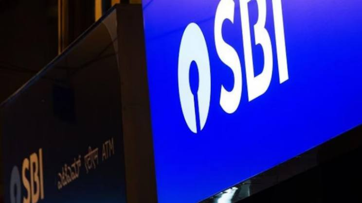
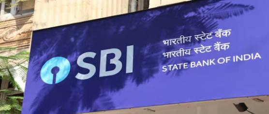
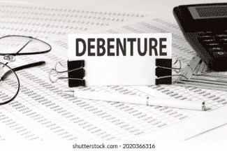

Media Coverage
NRIs can now invest in Sovereign Green Bonds this new way; Know how the impact on taxation of gains
The article discusses how investors can buy RBI Floating Rate Savings Bonds 2020, which offer a 8.05% interest rate, either online through the RBI retail direct website or via bank apps, as well as offline by visiting a bank branch. It explains the features of these bonds, including the taxable interest and a 7-year lock-in period, and highlights both the advantages (government backing, bi-annual interest payments) and disadvantages (non-tradability, taxable returns) of investing in them.
The Economics Times, Sept 18, 2024
Get 8.05% interest on these RBI bonds: How to buy RBI Floating Rate Savings Bonds online, offline
The article discusses how Non-Resident Indians (NRIs) can now invest in Sovereign Green Bonds (SGrBs) through the International Financial Services Centre (IFSC). It covers the eligibility, advantages, and disadvantages of investing in these bonds, along with the tax implications for NRIs. Additionally, the article highlights how SGrBs support green infrastructure projects and compares them to other investment options like Green Fixed Deposits.
The Economics Times, Sept 16, 2024
Sovereign Gold Bond Series IV FY24: How are SGBs taxed? Details her-Abhijit Roy's ,Co-Founder &CEO Opinon
Interest earned on SGBs is taxed at the individual's applicable tax rate, similar to standard interest earnings. Additionally, investors who subscribe online and use digital payment methods will receive SGBs at a Rs 50 per gram discount from the issue price, said Abhijit Roy, CEO, GoldenPi.
Business Today, Feb 11, 2024
Sovereign Gold Bonds 2023-24 series IV priced at ₹6,263 per gram, issue to open on Monday-Abhijit Roy's ,Co-Founder &CEO Opinon
Abhijit Roy, CEO of GoldenPi, highlighted the appeal of Sovereign Gold Bonds (SGBs) for investors seeking to include gold in their portfolios.
CNBC TV18, Feb 10, 2024
SOVEREIGN GOLD BONDS: Earn tax-free returns from SGB-Abhijit Roy's ,Co-Founder &CEO Opinon
Abhijit Roy, CEO, GoldenPi, an online investment platform, says the government guarantee provides more security for SGBs, which may be preferred over gold exchange-traded funds. “When combined with a SIP-like strategy, SGBs offer investors a compelling option,
The Financial express, Feb 10, 2024
Where are rates headed? - Abhijit Roy's ,Co-Founder &CEO speaks on the Podcast
Aarati Krishnan from BusinessLine speaks with Mr. Abhijit Roy, CEO and co-founder of GoldenPi, about the outlook for interest rates and the opportunities for debt investors.Mr Roy said that he expects rates to start their decline in the latter half of the year
The Hindu Business Line, Feb 08, 2024
Budget 2024 sparks optimism for debt funds — where should you invest now-Abhijit Roy's ,Co-Founder &CEO Opinon
Advocating bond market investments has emerged as a critical theme for 2024, said Abhijit Roy, CEO of GoldenPi.He added that the anticipated surge in retail interest is supported by expectations of increased capital raised through non-convertible debentures (NCDs), initial public offerings (IPOs) and private placements.
CNBC TV18, Feb 05, 2024
FPIs find stability in Indian debt amid equity challenges; what's behind the inflows into bonds?- Abhijit Roy's ,Co-Founder &CEO Opinon
The inclusion of Indian government bonds in the JP Morgan Index (in June 2024) will have a significant impact on the inflows. This inclusion has made Indian bonds more appealing to foreign portfolio investors (FPIs). The prospect of India's inclusion in the index has sparked increased interest in and investment in Indian debt securities, said Abhijit Roy, CEO of GoldenPi
Live mint, Feb 05, 2024
Why Spotlight Will Be On India's Bond Market In 2024- Abhijit Roy's ,Co-Founder &CEO Opinon
There is a possibility that the yield may dip below the 7% level, according to Abhijit Roy, chief executive officer at GoldenPi.The inclusion is expected to result in a substantial influx of capital, amounting to trillions of dollars, through the foreign portfolio investment route within a short time frame, Roy said. This surge in demand for government bonds is anticipated to lead to a reduction in yields.
NDTV profit, Jan 02, 2024
2 sovereign gold bond tranches in the offing: How do SGBs differ from GMS?
SGBs are often considered a more cost-effective alternative to physical gold due to the avoidance of significant making charges of 15-20 per cent associated with buying and selling jewelry. Holding SGBs in paper form eliminates maintenance hassles and depreciation concerns, providing a convenient and efficient investment option. Additionally, SGBs offer the opportunity to earn interest, unlike physical gold, making them more attractive for investors seeking assured income, said Abhijit Roy, CEO, GoldenPi.
Business standard, Dec 12, 2023
Will FD interest rates touch 10%? All eyes on RBI MPC on December 8, 2023,Abhijit Roy's ,Co-Founder &CEO Opinon
Bank FD rates touching 10% is a mythical situation in the current economic scenario. It is for the simple reason that if Banks have to pay 10% on deposits, they have to lend at rates higher than this
ETwealth, Dec 07, 2023
Sovereign Gold Bond tranche 1 matures today: Should you reinvest in next SGB?,Abhijit Roy's ,Co-Founder &CEO Opinon
Every time you alter the shape of gold, there is a loss in profit of 15–25% when buying and selling jewelry. Moreover, expenses are associated with storing, insuring, and safeguarding actual gold. SGBs can be stored in your demat account or even as physical certificates.
Business Today, Nov 30, 2023
First Sovereign Gold Bonds batch matures today: Here's how much returns investors can expect,Abhijit Roy's ,Co-Founder &CEO Opinon
Every time an individual alters the shape of gold, there is a loss in profit of 15–25% when buying and selling jewellery. Moreover, expenses are associated with storing, insuring, and safeguarding actual gold. SGBs can be stored in the Demat account or even as physical certificates.
CNBC TV18, Nov 30, 2023
First Sovereign Gold Bonds To Mature On Nov. 30. Here's How Much Investors Made From The First Issue,Abhijit Roy's ,Co-Founder &CEO Opinon
Roy suggests that buying gold bonds in the secondary market will be a good investment only if the price is lower than the current gold price. Typically, the secondary market volumes built by sell-before-maturity trades are pretty low in the range of Rs 5 to Rs 10 crore daily,
NDTV profit, Nov 29, 2023
Corporate bond market experiences remarkable expansion on momentum in private placements, Abhijit Roy's ,Co-Founder &CEO Opinon
As per Abhijit Roy, pivotal developments are poised to shape the landscape into FY’24-25. “SEBI's initiative to reduce the ticket size from ₹10 lakh to ₹1 lakh since January 1, 2023, fosters increased retail investor participation
Live mint, Nov 28, 2023
Is it wise to buy Sovereign Gold Bonds from secondary market? Critical points explained, Abhijit Roy's ,Co-Founder &CEO Opinon
As we gear up to celebrate Dhanteras tomorrow, Abhijit Roy, CEO, GoldenPi, an online platform for bonds, debentures and other fixed-income assets, explains important points related to SGBs for investors in an email interaction with FE Money.
Financial Express, Nov 10, 2023
Government Bonds vs Corporate Bonds: Which is better for long-term investment? ,Abhijit Roy's ,Co-Founder &CEO Opinon
They are almost entirely risk-free, which attracts risk-averse investors including banks, financial institutions, and private individuals and often have interest rates that are fixed or variable and range from 5% to 6% for 10-year bonds
Live mint, Oct 27, 2023
Fixed-income investments: Three factors to consider when rebalancing your portfolio,Abhijit Roy's ,Co-Founder &CEO Opinon
Bonds and other fixed-income securities are essential components of diverse portfolios, and keeping the right mix of these securities can have a big impact on an investor's overall financial health.
Live mint, Oct 13, 2023
See more
GoldenPi: How SaaS is Reshaping Fintech
Compared to earlier platforms, SaaS (Software as a Service) has significantly changed the landscape of fixed-income investments for retail investors. It has done this by opening up a wide range of channels for everyone to access fixed-income products.
CXO Today, Sep 22, 2023
Riskier bonds find takers in new debt mutual fund tax regime - Abhijit Roy's ,Co-Founder &CEO Opinon
Delving into high-yield bonds demands meticulous evaluation of both bond issuer and bond parameters, said Abhijit Roy, chief executive officer, GoldenPi. Roy believes investors could look at the issuer's year-on-year revenue growth,
Economic Times, Aug 31, 2023
India corp bond issuance on track to hit record highs this fiscal year: Bankers, Abhijit Roy's ,Co-Founder &CEO Opinon
Abhijit Roy, chief executive officer at GoldenPi, an online bond portal expects issuance to cross 9 trillion rupees in the current year, with major focus remaining on fundraising via shorter duration bonds.
Economic Times, Aug 08, 2023
Surge in adoption of zero coupon bonds by insurance companies to meet diversification need, Abhijit Roy's, Co-Founder &CEO Opinon
STRIPS offer an effective investment strategy for insurance companies, providing them with maturity periods beyond 10 years. The market has responded positively, with insurance companies investing approximately Rs 380 million in STRIPS in 2020,
CNBC TV18, Aug 04, 2023
SBI's infra bonds: Should retail investors opt for such investments? Abhijit Roy's, Co-Founder &CEO Opinon
Infrastructure bonds are often issued for a period of 10 to 15 years or more. The credit rating bestowed upon infrastructure bonds serves as a compass, guiding investors through the seas of financial security and default possibilities. Government-issued bonds reign supreme with elevated credit ratings, rendering them a fortress of safety in comparison to their corporate counterparts.
Business Standard, Aug 02, 2023
 The rising popularity of gold bonds- Abhijit Roy's, Co-Founder &CEO Opinon
According to Roy of Goldenpi a big disadvantage of gold bonds is the fact that they have a tenure of eight years. This makes them illiquid. Investors have the option of redeeming them with the RBI after the expiry of five years or they could sell them on the secondary market.
Forbes India, Jun 28, 2023
Debt or equity mutual fund: Which one should investors choose? Abhijit Roy's, Co-Founder &CEO Opinon
Meanwhile, Abhijit Roy, Chief Executive Officer of GoldenPi, attributed heightened volatility in equity markets to higher traction for debt funds. He said investors may have sought stability to shield themselves against unpredictable fluctuations.
Economic Times, Jun 23, 2023
Everything to know about the Sovereign Gold Bond scheme that opens today- Our Co-Founder &CEO Abhijit Roy's Opinon
The first tranche of sovereign gold bonds (SGBs), issued by the Reserve Bank of India, will be available for subscription from today until 23 June. SGBs are government securities denominated in grams of gold. They are substitutes for holding physical gold. Investors have to pay the issue price in cash and the bonds will be redeemed in cash on maturity. The Bond is issued by RBI on behalf of Government of India.
Business Standard, Jun 19, 2023
Gold price fall offers good entry into SGB - Our Co-Founder &CEO Abhijit Roy's Opinon
Investors can use the 5% correction in domestic gold prices from the high of May to allocate to the yellow metal using the first tranche of sovereign gold bonds (SGB) scheme, announced by the Reserve Bank of India for the first half of the financial year. However, given the recent sharp rally in gold
The Economic Times, Jun 19, 2023
Feeling jittery over market ups & downs? Investors can look to invest here for decent gains-Our Co-Founder &CEO Abhijit Roy's Opinon
Feeling jittery over market ups & downs? Investors can look to invest here for decent gains.As interest rates have peaked and with no immediate rate cuts in sight, investors can take advantage of the debt schemes by locking their investments at the prevailing high rates
The Economic Times, Jun 18, 2023
Sovereign Gold Bonds - scheme 2023-24 opens today. Here's all you need to know -Our Co-Founder &CEO Abhijit Roy's Opinon
The government has decided to issue two tranches of sovereign gold bonds (SGBs) during the first half of the current financial year. The first tranche will be available for subscription from June 19-23 and the second tranche will open from September 11-15
live mint, Jun 17, 2023
SGB 2023-24: New issue of sovereign gold bond scheme announced. Check issuance date, eligibility, lock-in period, Our Co-Founder &CEO Abhijit Roy's Opinon
The Centre has decided to launch the next series of Sovereign Gold Bonds (SGBs) for this financial year. The government has decided to issue two tranches of gold bonds in the first half of the current financial year.The first tranche, 2023-24 Series I, will be issued from June 19 and continue till June 23. The second issue, 2023-24 Series II, will be issued between September 11 and 15, 2023, Reserve Bank of India (RBI) said in a statement.
Business Today, Jun 16, 2023
When can you buy Sovereign Gold Bonds from banks this year?-Our Co-Founder &CEO Abhijit Roy's Opinon
Sovereign Gold Bond Scheme 2023-24 Issue Dates (June and September) 2023: You will be able to subscribe to the Sovereign Gold Bond (SGB) between June 19 and June 23 this month. After this, the next window for subscribing to SGB will open between September 11 and September 15, 2023, according to an RBI press release.
Finacial express, Jun 15, 2023
Time to add high- yield corporate bonds to your protfolio? what experts say -Our Co-Founder &CEO Abhijit Roy's Opinon
Corporate bonds are a type of debt security issued by companies. According to money experts, in recent years, they have witnessed a significant surge in the interest surrounding high-yield corporate bonds. However, before investing in these bonds, investors should weigh all the pros and cons attached to them. Experts suggest choosing bonds issued by companies with strong finances.
live mint, Jun 12, 2023
High Bank fixed Deposit (FD) interest rates may not last long. Here is why , Our Co-Founder &CEO Abhijit Roy's Opinon
The era of rising fixed deposit (FD) rates may be drawing to a close, and the withdrawal of 2000 currency notes from circulation is believed to be a significant factor. Various macroeconomic indicators suggest that FD interest rates are approaching their peak in the current cycle of interest rate hikes.
live mint, Jun 12, 2023
What is Green Fixed Deposit? Interest Rate, Benefits, Risks and How it works – Explained, Our Co-Founder &CEO Abhijit Roy's Opinon
Green fixed deposit is a financial instrument encouraging sustainable development by channelling funds towards projects focused on renewable energy, clean technology, or other environmentally beneficial initiatives.From June 1, new green fixed deposit norms kicked in. Banks or financial institutions accepting green deposits are now required to inform the Reserve Bank of India (RBI) about how they would invest the funds.
Financial Express, Jun 09, 2023
Why debt is juicier than equity investments today- Our Co-Founder &CEO Abhijit Roy's Opinon
Imagine being able to make double-digit returns with lower levels of risk and volatility than equity investments. That’s a deal few would spurn.That is also the promise that debt funds hold. In the last 18 months, as interest rates globally have headed north so have investments into this asset class. The US 10-year government bond, considered a proxy for the global risk-free rate, now trades at 3.6 percent—up 250 basis points in the last 18 months.
Forbes India, Jun 08, 2023
Building a financial portfolio with minimal financial risks
Many people are rushing to close their investments for the current financial year as the fiscal year-end is just around the corner. In this rush, people often invest without really understanding the impact of their investments in the long term.
udayavani, Mar 12, 2023
Tax saving Guide for women salaried employees in 2023- Our Co-Founder &CEO Abhijit Roy's Opinon
According to Humanity Welfare Council data, 80% of Indian women lack financial literacy, and approximately 62% of Indian women do not have bank accounts. As the world is marking International Women's Day (IWD) today, female participation in financial decision-making and proper tax planning will empower more to their traction in financial well-being. So, let's look at how women taxpayers can develop a proper tax planning strategy in 2023, because the deadline to file an Income Tax Return (ITR) for income earned in fiscal year 2022-23 is July 31.
live mint, Mar 08, 2023
Why NCD IPOs should be on an investor’s radar
Widespread awareness has been created around the different forms of retail investments available, including in the debt or fixed-income market that has been picking up pace lately. The fixed-income investment segment comprises multiple options for investors including bonds, debt mutual funds and now even Non-Convertible Debenture (NCD) IPOs.
Financial Express, Feb 25, 2023
Zerodha backed fintech receives debt broker license from Sebi
Zerodha-backed GoldenPi Technologies has become the first online bond platform provider to receive a debt brokerage license from market regulator Sebi. The Bengaluru-based fintech firm expects this development to spur greater trust in online bonds and debentures investment space.
live mint, Jan 05, 2023
Sebi issues debt broker license to Zerodha-backed GoldenPi Technologies
The Securities and Exchange Board of India (Sebi) has issued a debt broker license to Bengaluru-based fintech firm GoldenPi Technologies. With the development
The Economic Times, Jan 05, 2023
SEBI Issues Debt Broker License To Zerodha-Backed GoldenPi Technologies
The Securities and Exchange Board of India has issued a debt broker license to Bengaluru-based fintech firm GoldenPi Technologies. With the development, GoldenPi became the first online bond platform provider to receive a debt brokerage license from SEBI.
BQ Prime, Jan 05, 2023
Sebi issues debt broker license to Zerodha-backed GoldenPi Technologies
The Securities and Exchange Board of India (Sebi) has issued a debt broker license to Bengaluru-based fintech firm GoldenPi Technologies.
Business Standard, Jan 05, 2023
Exclusive | GoldenPi gets first debt broker licence after new regulations
GoldenPi Technologies, a Bengaluru-based fintech company, said it became the first online bond platform provider to receive a debt broker licence from the Securities and Exchange Board of India (SEBI) after new regulations were introduced in November last year.
Money Control, Jan 05, 2023
Democratising the Bond Market to fuel the next step in India’s growth journey
The bond market in India, today, stands at around $1.8 trillion, which is further split into $1.2 trillion for government securities and $0.6 trillion for corporate bonds.
Financial Express, Jan 01, 2023
The rising popularity of gold bonds- Abhijit Roy's, Co-Founder &CEO Opinon
According to Roy of Goldenpi a big disadvantage of gold bonds is the fact that they have a tenure of eight years. This makes them illiquid. Investors have the option of redeeming them with the RBI after the expiry of five years or they could sell them on the secondary market.
Forbes India, Jun 28, 2023
Debt or equity mutual fund: Which one should investors choose? Abhijit Roy's, Co-Founder &CEO Opinon
Meanwhile, Abhijit Roy, Chief Executive Officer of GoldenPi, attributed heightened volatility in equity markets to higher traction for debt funds. He said investors may have sought stability to shield themselves against unpredictable fluctuations.
Economic Times, Jun 23, 2023
Everything to know about the Sovereign Gold Bond scheme that opens today- Our Co-Founder &CEO Abhijit Roy's Opinon
The first tranche of sovereign gold bonds (SGBs), issued by the Reserve Bank of India, will be available for subscription from today until 23 June. SGBs are government securities denominated in grams of gold. They are substitutes for holding physical gold. Investors have to pay the issue price in cash and the bonds will be redeemed in cash on maturity. The Bond is issued by RBI on behalf of Government of India.
Business Standard, Jun 19, 2023
Gold price fall offers good entry into SGB - Our Co-Founder &CEO Abhijit Roy's Opinon
Investors can use the 5% correction in domestic gold prices from the high of May to allocate to the yellow metal using the first tranche of sovereign gold bonds (SGB) scheme, announced by the Reserve Bank of India for the first half of the financial year. However, given the recent sharp rally in gold
The Economic Times, Jun 19, 2023
Feeling jittery over market ups & downs? Investors can look to invest here for decent gains-Our Co-Founder &CEO Abhijit Roy's Opinon
Feeling jittery over market ups & downs? Investors can look to invest here for decent gains.As interest rates have peaked and with no immediate rate cuts in sight, investors can take advantage of the debt schemes by locking their investments at the prevailing high rates
The Economic Times, Jun 18, 2023
Sovereign Gold Bonds - scheme 2023-24 opens today. Here's all you need to know -Our Co-Founder &CEO Abhijit Roy's Opinon
The government has decided to issue two tranches of sovereign gold bonds (SGBs) during the first half of the current financial year. The first tranche will be available for subscription from June 19-23 and the second tranche will open from September 11-15
live mint, Jun 17, 2023
SGB 2023-24: New issue of sovereign gold bond scheme announced. Check issuance date, eligibility, lock-in period, Our Co-Founder &CEO Abhijit Roy's Opinon
The Centre has decided to launch the next series of Sovereign Gold Bonds (SGBs) for this financial year. The government has decided to issue two tranches of gold bonds in the first half of the current financial year.The first tranche, 2023-24 Series I, will be issued from June 19 and continue till June 23. The second issue, 2023-24 Series II, will be issued between September 11 and 15, 2023, Reserve Bank of India (RBI) said in a statement.
Business Today, Jun 16, 2023
When can you buy Sovereign Gold Bonds from banks this year?-Our Co-Founder &CEO Abhijit Roy's Opinon
Sovereign Gold Bond Scheme 2023-24 Issue Dates (June and September) 2023: You will be able to subscribe to the Sovereign Gold Bond (SGB) between June 19 and June 23 this month. After this, the next window for subscribing to SGB will open between September 11 and September 15, 2023, according to an RBI press release.
Finacial express, Jun 15, 2023
Time to add high- yield corporate bonds to your protfolio? what experts say -Our Co-Founder &CEO Abhijit Roy's Opinon
Corporate bonds are a type of debt security issued by companies. According to money experts, in recent years, they have witnessed a significant surge in the interest surrounding high-yield corporate bonds. However, before investing in these bonds, investors should weigh all the pros and cons attached to them. Experts suggest choosing bonds issued by companies with strong finances.
live mint, Jun 12, 2023
High Bank fixed Deposit (FD) interest rates may not last long. Here is why , Our Co-Founder &CEO Abhijit Roy's Opinon
The era of rising fixed deposit (FD) rates may be drawing to a close, and the withdrawal of 2000 currency notes from circulation is believed to be a significant factor. Various macroeconomic indicators suggest that FD interest rates are approaching their peak in the current cycle of interest rate hikes.
live mint, Jun 12, 2023
What is Green Fixed Deposit? Interest Rate, Benefits, Risks and How it works – Explained, Our Co-Founder &CEO Abhijit Roy's Opinon
Green fixed deposit is a financial instrument encouraging sustainable development by channelling funds towards projects focused on renewable energy, clean technology, or other environmentally beneficial initiatives.From June 1, new green fixed deposit norms kicked in. Banks or financial institutions accepting green deposits are now required to inform the Reserve Bank of India (RBI) about how they would invest the funds.
Financial Express, Jun 09, 2023
Why debt is juicier than equity investments today- Our Co-Founder &CEO Abhijit Roy's Opinon
Imagine being able to make double-digit returns with lower levels of risk and volatility than equity investments. That’s a deal few would spurn.That is also the promise that debt funds hold. In the last 18 months, as interest rates globally have headed north so have investments into this asset class. The US 10-year government bond, considered a proxy for the global risk-free rate, now trades at 3.6 percent—up 250 basis points in the last 18 months.
Forbes India, Jun 08, 2023
Building a financial portfolio with minimal financial risks
Many people are rushing to close their investments for the current financial year as the fiscal year-end is just around the corner. In this rush, people often invest without really understanding the impact of their investments in the long term.
udayavani, Mar 12, 2023
Tax saving Guide for women salaried employees in 2023- Our Co-Founder &CEO Abhijit Roy's Opinon
According to Humanity Welfare Council data, 80% of Indian women lack financial literacy, and approximately 62% of Indian women do not have bank accounts. As the world is marking International Women's Day (IWD) today, female participation in financial decision-making and proper tax planning will empower more to their traction in financial well-being. So, let's look at how women taxpayers can develop a proper tax planning strategy in 2023, because the deadline to file an Income Tax Return (ITR) for income earned in fiscal year 2022-23 is July 31.
live mint, Mar 08, 2023
Why NCD IPOs should be on an investor’s radar
Widespread awareness has been created around the different forms of retail investments available, including in the debt or fixed-income market that has been picking up pace lately. The fixed-income investment segment comprises multiple options for investors including bonds, debt mutual funds and now even Non-Convertible Debenture (NCD) IPOs.
Financial Express, Feb 25, 2023
Zerodha backed fintech receives debt broker license from Sebi
Zerodha-backed GoldenPi Technologies has become the first online bond platform provider to receive a debt brokerage license from market regulator Sebi. The Bengaluru-based fintech firm expects this development to spur greater trust in online bonds and debentures investment space.
live mint, Jan 05, 2023
Sebi issues debt broker license to Zerodha-backed GoldenPi Technologies
The Securities and Exchange Board of India (Sebi) has issued a debt broker license to Bengaluru-based fintech firm GoldenPi Technologies. With the development
The Economic Times, Jan 05, 2023
SEBI Issues Debt Broker License To Zerodha-Backed GoldenPi Technologies
The Securities and Exchange Board of India has issued a debt broker license to Bengaluru-based fintech firm GoldenPi Technologies. With the development, GoldenPi became the first online bond platform provider to receive a debt brokerage license from SEBI.
BQ Prime, Jan 05, 2023
Sebi issues debt broker license to Zerodha-backed GoldenPi Technologies
The Securities and Exchange Board of India (Sebi) has issued a debt broker license to Bengaluru-based fintech firm GoldenPi Technologies.
Business Standard, Jan 05, 2023
Exclusive | GoldenPi gets first debt broker licence after new regulations
GoldenPi Technologies, a Bengaluru-based fintech company, said it became the first online bond platform provider to receive a debt broker licence from the Securities and Exchange Board of India (SEBI) after new regulations were introduced in November last year.
Money Control, Jan 05, 2023
Democratising the Bond Market to fuel the next step in India’s growth journey
The bond market in India, today, stands at around $1.8 trillion, which is further split into $1.2 trillion for government securities and $0.6 trillion for corporate bonds.
Financial Express, Jan 01, 2023

Pension funds to invest in sovereign green bonds: How will it impact NPS subscribers? Abhijit Roy's, Co-Founder &CEO Opinon The decision by the PFRDA to allow funds to invest in sovereign green bonds holds significant implications for retail investors or NPS subscribers. By including these environmentally conscious debt instruments in their investment portfolios, pension funds can achieve greater diversification, Business Today, Jul 24, 2023 Pension funds to invest in sovereign green bonds (SGrBs): How it will impact retail investors? Abhijit Roy's, Co-Founder &CEO Opinon Sovereign Green Bonds, also known as Green Bonds are government-issued bonds used to fund environment-related projects.Pension Fund Regulatory and Development Authority (PFRDA)- has said that it will allow pension funds to invest in sovereign green bonds (SGrBs). As per a report in PTT, the government is expected to issue sovereign green bonds in the second half of the current financial year. Livemint, Jul 21, 2023 SBI likely to raise up to Rs 10,000 crore via infra bonds: What are these and how to invest, Abhijit Roy's, Co-Founder &CEO Opinon After this lock-in period, investors have the flexibility to exit by trading the bonds on the National Stock Exchange (NSE) or Bombay Stock Exchange (BSE). Participation in infrastructure bond investments is open to all Indian citizens above 18 years of age, as well as Hindu Undivided Families (HUF), CNBC TV 18, Jul 20, 2023
27th tranche of electoral bonds open now — know what is it and who can buy. Abhijit Roy's, Co-Founder &CEO Opinon These bonds promote a system where donations can be made through authorised banks, mitigating the use of cash and ensuring a traceable trail of funds. While electoral bonds prioritise anonymity for donors, CNBC TV 18, Jul 04, 2023
The rising popularity of gold bonds- Abhijit Roy's, Co-Founder &CEO Opinon
According to Roy of Goldenpi a big disadvantage of gold bonds is the fact that they have a tenure of eight years. This makes them illiquid. Investors have the option of redeeming them with the RBI after the expiry of five years or they could sell them on the secondary market.
Forbes India, Jun 28, 2023
Debt or equity mutual fund: Which one should investors choose? Abhijit Roy's, Co-Founder &CEO Opinon
Meanwhile, Abhijit Roy, Chief Executive Officer of GoldenPi, attributed heightened volatility in equity markets to higher traction for debt funds. He said investors may have sought stability to shield themselves against unpredictable fluctuations.
Economic Times, Jun 23, 2023
Everything to know about the Sovereign Gold Bond scheme that opens today- Our Co-Founder &CEO Abhijit Roy's Opinon
The first tranche of sovereign gold bonds (SGBs), issued by the Reserve Bank of India, will be available for subscription from today until 23 June. SGBs are government securities denominated in grams of gold. They are substitutes for holding physical gold. Investors have to pay the issue price in cash and the bonds will be redeemed in cash on maturity. The Bond is issued by RBI on behalf of Government of India.
Business Standard, Jun 19, 2023
Gold price fall offers good entry into SGB - Our Co-Founder &CEO Abhijit Roy's Opinon
Investors can use the 5% correction in domestic gold prices from the high of May to allocate to the yellow metal using the first tranche of sovereign gold bonds (SGB) scheme, announced by the Reserve Bank of India for the first half of the financial year. However, given the recent sharp rally in gold
The Economic Times, Jun 19, 2023
Feeling jittery over market ups & downs? Investors can look to invest here for decent gains-Our Co-Founder &CEO Abhijit Roy's Opinon
Feeling jittery over market ups & downs? Investors can look to invest here for decent gains.As interest rates have peaked and with no immediate rate cuts in sight, investors can take advantage of the debt schemes by locking their investments at the prevailing high rates
The Economic Times, Jun 18, 2023
Sovereign Gold Bonds - scheme 2023-24 opens today. Here's all you need to know -Our Co-Founder &CEO Abhijit Roy's Opinon
The government has decided to issue two tranches of sovereign gold bonds (SGBs) during the first half of the current financial year. The first tranche will be available for subscription from June 19-23 and the second tranche will open from September 11-15
live mint, Jun 17, 2023
SGB 2023-24: New issue of sovereign gold bond scheme announced. Check issuance date, eligibility, lock-in period, Our Co-Founder &CEO Abhijit Roy's Opinon
The Centre has decided to launch the next series of Sovereign Gold Bonds (SGBs) for this financial year. The government has decided to issue two tranches of gold bonds in the first half of the current financial year.The first tranche, 2023-24 Series I, will be issued from June 19 and continue till June 23. The second issue, 2023-24 Series II, will be issued between September 11 and 15, 2023, Reserve Bank of India (RBI) said in a statement.
Business Today, Jun 16, 2023
When can you buy Sovereign Gold Bonds from banks this year?-Our Co-Founder &CEO Abhijit Roy's Opinon
Sovereign Gold Bond Scheme 2023-24 Issue Dates (June and September) 2023: You will be able to subscribe to the Sovereign Gold Bond (SGB) between June 19 and June 23 this month. After this, the next window for subscribing to SGB will open between September 11 and September 15, 2023, according to an RBI press release.
Finacial express, Jun 15, 2023
Time to add high- yield corporate bonds to your protfolio? what experts say -Our Co-Founder &CEO Abhijit Roy's Opinon
Corporate bonds are a type of debt security issued by companies. According to money experts, in recent years, they have witnessed a significant surge in the interest surrounding high-yield corporate bonds. However, before investing in these bonds, investors should weigh all the pros and cons attached to them. Experts suggest choosing bonds issued by companies with strong finances.
live mint, Jun 12, 2023
High Bank fixed Deposit (FD) interest rates may not last long. Here is why , Our Co-Founder &CEO Abhijit Roy's Opinon
The era of rising fixed deposit (FD) rates may be drawing to a close, and the withdrawal of 2000 currency notes from circulation is believed to be a significant factor. Various macroeconomic indicators suggest that FD interest rates are approaching their peak in the current cycle of interest rate hikes.
live mint, Jun 12, 2023
What is Green Fixed Deposit? Interest Rate, Benefits, Risks and How it works – Explained, Our Co-Founder &CEO Abhijit Roy's Opinon
Green fixed deposit is a financial instrument encouraging sustainable development by channelling funds towards projects focused on renewable energy, clean technology, or other environmentally beneficial initiatives.From June 1, new green fixed deposit norms kicked in. Banks or financial institutions accepting green deposits are now required to inform the Reserve Bank of India (RBI) about how they would invest the funds.
Financial Express, Jun 09, 2023
Why debt is juicier than equity investments today- Our Co-Founder &CEO Abhijit Roy's Opinon
Imagine being able to make double-digit returns with lower levels of risk and volatility than equity investments. That’s a deal few would spurn.That is also the promise that debt funds hold. In the last 18 months, as interest rates globally have headed north so have investments into this asset class. The US 10-year government bond, considered a proxy for the global risk-free rate, now trades at 3.6 percent—up 250 basis points in the last 18 months.
Forbes India, Jun 08, 2023
Building a financial portfolio with minimal financial risks
Many people are rushing to close their investments for the current financial year as the fiscal year-end is just around the corner. In this rush, people often invest without really understanding the impact of their investments in the long term.
udayavani, Mar 12, 2023
Tax saving Guide for women salaried employees in 2023- Our Co-Founder &CEO Abhijit Roy's Opinon
According to Humanity Welfare Council data, 80% of Indian women lack financial literacy, and approximately 62% of Indian women do not have bank accounts. As the world is marking International Women's Day (IWD) today, female participation in financial decision-making and proper tax planning will empower more to their traction in financial well-being. So, let's look at how women taxpayers can develop a proper tax planning strategy in 2023, because the deadline to file an Income Tax Return (ITR) for income earned in fiscal year 2022-23 is July 31.
live mint, Mar 08, 2023
Why NCD IPOs should be on an investor’s radar
Widespread awareness has been created around the different forms of retail investments available, including in the debt or fixed-income market that has been picking up pace lately. The fixed-income investment segment comprises multiple options for investors including bonds, debt mutual funds and now even Non-Convertible Debenture (NCD) IPOs.
Financial Express, Feb 25, 2023
Zerodha backed fintech receives debt broker license from Sebi
Zerodha-backed GoldenPi Technologies has become the first online bond platform provider to receive a debt brokerage license from market regulator Sebi. The Bengaluru-based fintech firm expects this development to spur greater trust in online bonds and debentures investment space.
live mint, Jan 05, 2023
Sebi issues debt broker license to Zerodha-backed GoldenPi Technologies
The Securities and Exchange Board of India (Sebi) has issued a debt broker license to Bengaluru-based fintech firm GoldenPi Technologies. With the development
The Economic Times, Jan 05, 2023
SEBI Issues Debt Broker License To Zerodha-Backed GoldenPi Technologies
The Securities and Exchange Board of India has issued a debt broker license to Bengaluru-based fintech firm GoldenPi Technologies. With the development, GoldenPi became the first online bond platform provider to receive a debt brokerage license from SEBI.
BQ Prime, Jan 05, 2023
Sebi issues debt broker license to Zerodha-backed GoldenPi Technologies
The Securities and Exchange Board of India (Sebi) has issued a debt broker license to Bengaluru-based fintech firm GoldenPi Technologies.
Business Standard, Jan 05, 2023
Exclusive | GoldenPi gets first debt broker licence after new regulations
GoldenPi Technologies, a Bengaluru-based fintech company, said it became the first online bond platform provider to receive a debt broker licence from the Securities and Exchange Board of India (SEBI) after new regulations were introduced in November last year.
Money Control, Jan 05, 2023
Democratising the Bond Market to fuel the next step in India’s growth journey
The bond market in India, today, stands at around $1.8 trillion, which is further split into $1.2 trillion for government securities and $0.6 trillion for corporate bonds.
Financial Express, Jan 01, 2023
Goldenpi: Pioneers In Bringing Bonds And Debentures To Individual Investors
The overall goal is to supply individual investors with high-quality regulated fixed-income assets. One can invest in them and get larger returns than a traditional bank, says Abhijit Roy, Co-Founder & CEO at Goldenpi
Silicon India, Dec 27, 2022
Budget 2023 experts demand this Incentive to bolster debt fixed income markets
The upcoming Union Budget 2023 will be the last full year budget from the Modi government ahead of the Lok Sabha elections due in early 2024. What are the key expectation from Finance Minister Nirmala Sitharaman Budget?
live mint, Dec 27, 2022
HDFC, Bajaj finance raise deposit rates on select maturities
HDFC and Bajaj Finance, two financial powerhouses in India's consumer lending industry, have raised deposit rates for the ninth time this year on select maturities to garner more funds
The Economic Times, Dec 27, 2022
How GoldenPi built a platform for bond investments & won the support of Nithin Kamath of Zerodha
In this episode of theupstreamlife.com we talk to the founders of GoldenPi, Abhijit Roy and Samar Prathihar, who have made investing in bonds easy for ordinary retail investors. A chance meeting with Nithin Kamath led them to raise money and are now on a journey to take bond investments mainstream.
The Upstreamlife, Dec 01, 2022
GoldenPi: Should you buy bonds on this platform?
Over the past few months, bond investments have caught the imagination of investors as interest rates rose. India has seen many investment platforms mushroom. Market regulator SEBI came up with new norms that set the stage for better grievance redressal
Hindu Business Line, Nov 26, 2022
Is your investment safe with bonds?
Retail investors are becoming smart by betting big on “steady and stable” fixed income investment (bonds), instead of just riding on the rollercoaster of equity investment. Keeping the bigger picture of global uncertainties induced by war
Times of india, Nov 07, 2022
Making Balanced Choices: The Indian Investor Goes Past Traditional Investment Option
Samar Saxena (48), Central government employee, recalls the first time he thought of investments beyond the mandatory Provident Fund (PF) deductions.
Business world, Sep 30, 2022
How blockchain can transform the future of finance
The post-pandemic economy, fuelled by changing customer behaviours and the need for greater resilience in business systems, is expected to accelerate the adoption of Web 3.0.
Times of india, Sep 07, 2022
Fixed Income: GoldenPi and 5paisa join hands to enable online investment in bonds
GoldenPi, a fintech start-up building an ecosystem for fixed income investments, has announced its collaboration with brokerage firm 5paisa
Financail Express, Aug 04, 2022
See more
GoldenPi collaborates with 5paisa to enable online Bonds investment
Investing in fixed-income products has always been a tedious and cumbersome process. It required you to visit a bank and fill out long pages of documents. The general perception was that bonds are old-fashioned, and usability limited to senior citizens.
The week, Aug 04, 2022
Why should millennials consider investing in bonds and debentures?
Millennials are leveraging the power of digital platforms to make financial decisions that deliver on their goals despite a volatile and unpredictable global economy.
Financial Express, Jul 31, 2022
‘People are more inclined towards fixed income investments’: GoldenPi
As India’s first and leading aggregate platform for investing in bonds and debentures, GoldenPi currently has a user base of 2.5 lakh investors. The online platform features a daily inventory of Rs 5,000 crore, with a minimum investment amount of Rs 10,000 per investor.
India Today, Jul 29, 2022
How this Zerodha-backed fintech startup is making it easy for retail investors to buy bonds, debentures
Bengaluru-based fintech tech startup GoldenPi’s platform makes it easy for anyone to buy and sell bonds or debentures. It offers retail investors newer avenues to park their money while issuers get access to a wider market.
YourStory, June 12, 2022


Why a debt IPO may be a safer bet than equity Equity-linked initial public offerings (IPOs) continue to attract investors, essentially due to their immediate high returns potential. In India, there’s immense interest in the IPO opportunity among short-term as well as long-term retail investors despite the underperformance of several IPOs in the recent past. CNBC, June 07, 2022 How GoldenPi Revolutionized Fixed Income Investment In India Golden Pi Technologies is a prudent company in the field of primary and secondary market bonds. The company's knowledge and the area is vast and veteran. Outlook India, June 06, 2022 GoldenPi raises $2 million in Pre–Series A funding GoldenPi Technologies has raised $2 million in Pre – Series A funding from domestic investors including High-net-worth individuals. The funding will be used with a vision to make quality debt investing in the bond market an easy India retailing, May 11, 2022 Fintech Startup GoldenPi Bags $ 2 M In Pre–Series A Funding GoldenPi Technologies, India’s foremost fintech platform for retailers, focused on fixed-income investments, has raised $2 million in Pre – Series A funding from domestic investors including High-net-worth individuals. With a vision to make quality debt investing in the bond market an easy, Business world, May 10, 2022 Why fixed income investments are a smart bet In India, investing in the fixed income space is a relatively new concept as compared to the Western markets. Although the space was dominated by institutional investors Times of India, May 08, 2022 GoldenPi partners with Axis Securities, IIFL Securities SaaS platform aims to provide seamless access to retail investors looking to invest in secondary market bonds and debentures through their brokers Press Press Journal, April 26, 2022 Should You Invest through Bond Platforms Like GoldenPi, BondsKart, Wint Wealth, etc? Investing in fixed returns is almost second nature for us Indians. However, interest rates on fixed deposits (FDs), the most preferred instrument for a large part of the population (especially retired senior citizens), are simply not enough to keep up with rising inflation levels Moneylife, April 16, 2022 GoldenPi: Revolutionizing Fixed Income Investment In India The largest online aggregator for bonds and debentures in India with 100+ products from topmost financial institutions, GoldenPi features daily inventory to the tune of Rs 5000 crores for investors looking to invest as little as Rs 10,000. Business world, April 07, 2022
Fixed-income investment startup, GoldenPi secured funding from Rainmatter
Rainmatter, a financial technology fund, and incubator set up by an online stock trading startup Zerodha, has now invested INR 3.5 crore in a Bangalore based online startup for fixed income investments, GoldenPi.
Tech story, June 19, 2020
Fixed-income investment marketplace GoldenPi raises funding from Rainmatter Capital
GoldenPi Technologies Pvt. Ltd, a marketplace platform focused on fixed-income investments, has raised Rs 3.5 crore ($459,785 at current exchange rate) from Rainmatter Capital.
Vccircle, June 18, 2020
Rainmatter invests ₹3.5 crore in bonds, debentures aggregator GoldenPi
Indian fintech fund and incubator Rainmatter has invested ₹3.5 crore in GoldenPi, an online marketplace for fixed-income investment options such as bonds and debentures
The Hindu, June 18, 2020
Zerodha’s Rainmatter invests Rs 3.5 crore in GoldenPi
Rainmatter has invested Rs 3.5 crore in GoldenPi, an online market place for fixed-income investment options. The Bengaluru-based startup helps retail traders to invest in bonds and debentures, traditionally a turf of large corporates or a few individuals.
Money control, June 18, 2020
Rainmatter invests Rs 3.5 Cr in fixed-income investment startup GoldenPi
Rainmatter, a fintech fund and incubator set up by online stock trading startup Zerodha, has invested Rs 3.5 crore in a Bengaluru-based online startup for fixed-income investments, GoldenPi.
Yourstory, June 18, 2020
GoldenPi raises Rs 3.5 crore funding from Zerodha-backed Rainmatter Capital
GoldenPi, an online aggregator of bonds and debentures available in the secondary market, has raised Rs 3.5 crore in funding from Rainmatter Capital
Economic Times, June 18, 2020